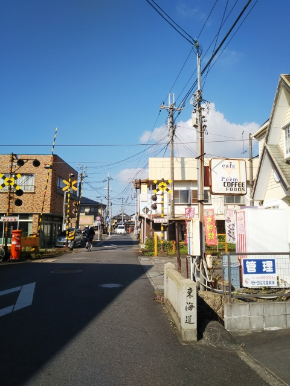
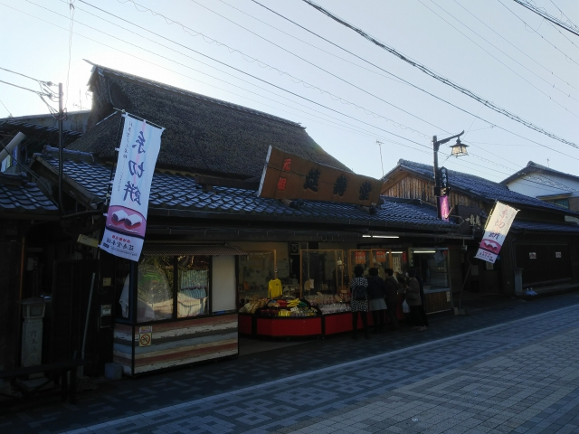

2021（R3）11月17日 近江鉄道ふたたび
５月の原チャリ訪問では時間切れやったので、改めて近江鉄道訪問です。
平日の大阪駅。皆さんは仕事でしょうが、私は遊び
に行きま～す。
大阪から乗った新快速は、今まで何べんも乗ったの
に初の京都分割の列車！知らんと湖西線に行く編成
に乗ってもうて、京都で慌ててホームを走って東海
道線編成に移動しました。
そんな変な列車、運転せんといて～
近江八幡到着。端のほうに近江鉄道のホームがあり
ます。初乗りかも・・・。よー覚えてない。

ちょうど列車が着いたところ。
車両は、相変わらず元西武車両っすね。
貴生川行きです。まずはこれに乗って終点の貴生川を目指し
ます。
今日のお供は、この一日券。バスも乗れるんで、結
構お得です。
八日市を経由して、貴生川到着。
前来た時はもっと狭い駅やった記憶があるけど、一
面二線の終点っぽい駅でした。
貴生川は信楽鉄道の起点でもあります。ちょうどＪ
Ｒも来て３社揃い踏みです。
草津線は１１３系健在です。

貴生川からはとんぼ帰りして、水口石橋駅へ。
無人駅は一番前から降りんとあかんのに、最後尾の
ドア前に立ってて、気づいてあわてて先頭まで行き
ました。今日はそんなん多いわ・・・
ここが、東海道５３次の５０宿目の水口宿の最寄駅
です。

駅近くが、旧東海道になってます。
このあたりが水口宿のあった所。
面影は留めてますね。
少し歩くと、ヴォーリズが設計した旧水口図書館があります。
昭和３年築ということで、当時はモダンなビル、って感じやったんでしょ
うね。
水口駅まで戻ります。
５月の訪問時は、高校性で一杯で、ゆっくりするこ
とが出来ませんでしたが、今日は時間があります。
八日市行のホームから見た駅舎。
のんびり次の電車を待ちます。
やって来た電車は、元西武ながら改造してるので独
特な顔つきです。
八日市に到着。ここもサイクルトレインやってます。
しかしどの電車もカラフルです。
運転頻度は高くないのに、３列車が揃いました。
せっかくバスも乗れるので、ここからバスで寄り道
です。
近江商人の町、五個荘です。
古い街並みが残ってます。水路が気持ちいいっすね。
いかにも近江商人、なバス停「三方よし」前。
八日市駅に戻ります。
今ふうの駅になってる八日市駅。
昔の駅の頃に行きたかった～ ↓

その八日市駅には、注目の施設が！
５月の時は時間切れで行けなかった、近江鉄道ミュージアムです。
しか～し！内容はイマイチでした・・・
プラレールコーナーの線路にのってる車両は、ペー
パークラフトでした。とほほ・・・
岩佐模型に、ちゃんと発注せんと・・・
次は米原方面に向かいますが、時間があったので、新八日市駅
まで行ってみました。
元々、近江八幡からの鉄道は、ここ新八日市が終点
でした。本線の会社と合併した時に、新八日市と八
日市を結ぶ線路が出来たそうです。
このベンチに座って、昼ごはん食べました。
開業時のままの建物です。
八日市駅に戻って、本線を北上して高宮駅到着。
ここの駅舎も、新しなってるなぁ。
この駅から、多賀大社に向かう線が分岐してます。

ホーム側は昔のままですね。
さて、多賀大社に向けて出発です。
多賀大社前駅に進入中。
側線がたくさんある駅ですね。

駅から多賀大社はちょっと離れてるんですが、せっ
かくなので大社前のお茶屋へ。
名物、糸切餅です。
昔、みんなで食べましたね。
時間なかったので「１０分ぐらいで出来ますか？」
って店の人に聞きましたが、顔、怖かったかもしれ
ません・・・
急いで駅に戻ります。
駅前には大きな鳥居がありますが、もう電車で参詣
する人もおらんねんやろなぁ。
最後の目的地、豊郷に到着です。
こんな駅舎です。
豊郷といえば、そう、旧豊郷小学校です。
思ってたより、大きくて立派でしゃれた建物でした。
これもヴォーリズ建築（昭和１２年築）です。
よくこれを解体しようと思ったもんです。バカ町長
の暴走とはいえ、公共工事の闇でしたね。
最後に、米原まで乗りとおそうと思います。
彦根止めの電車やったので、彦根で米原行きに乗換
えます。

なんとか日暮れまでに米原に到着です。
彦根－米原間は、開通当時は国鉄より運行頻度も高く
かなり賑わっそうですが、今はかなりさびれ気味でし
た。
支線も多い路線でしたが、接続は結構考えられてましたね。
死ぬまでに、また乗ることはあるんやろか・・・